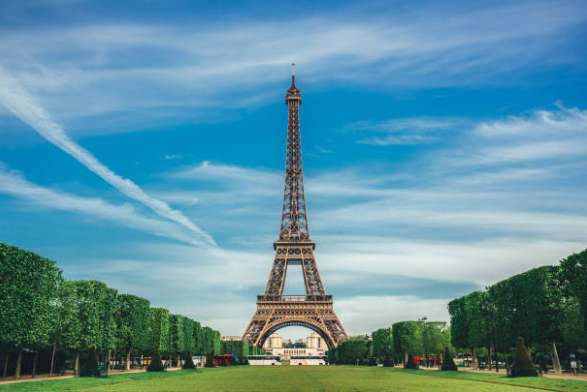
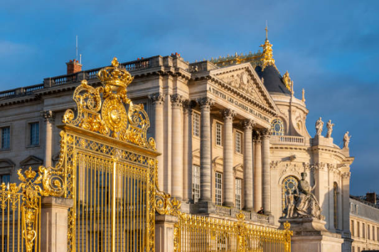
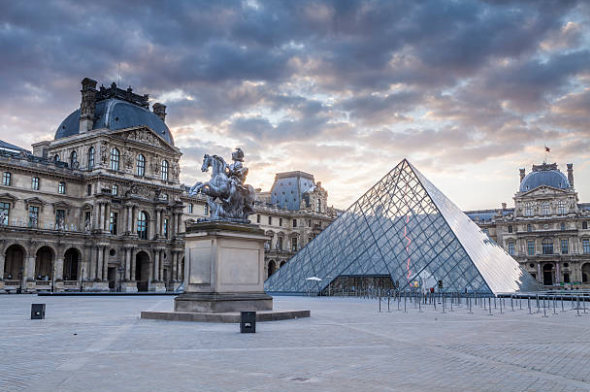
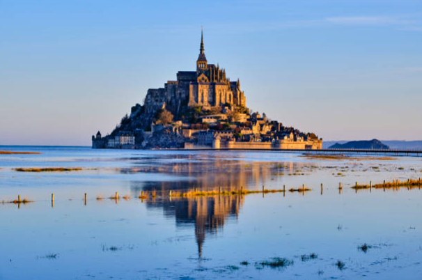
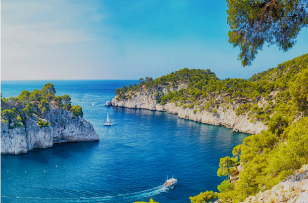

France is the most visited country in the world, welcoming a record 102
million international tourists. It is globally renowned for its
unparalleled blend of world-class art, deep-rooted history, diverse
landscapes, and iconic culinary traditions. Tourism serves as a major
pillar of the French economy, contributing roughly 9.7% of the national
GDP and supporting nearly 3 million jobs.France is a famous European
country known for its rich history, art, fashion, and world-class food.A
giant iron tower in Paris built in 1889 that stands as the most famous
symbol of France.
Eiffel Tower is a famous wrought-iron lattice tower located on the Champ de Mars in Paris, France. Designed and built by civil engineer Gustave Eiffel's company, the monument was constructed between 1887 and 1889 as the entrance gateway to the 1889 World's Fair, which celebrated the centennial of the French Revolution. Standing at an impressive 330 meters (1,083 feet) tall including its antennas, it was the world's tallest man-made structure for 41 years. Today, it is an enduring global icon of France and one of the most visited paid monuments in the world, welcoming millions of tourists each year to its three visitor levels for sweeping views of the Parisian skyline.

The Palace of Versailles is a massive, extravagant former royal residence located just southwest of Paris, France. Originally built as a small hunting lodge for King Louis XIII in 1623, it was dramatically expanded by King Louis XIV into a grand symbol of absolute monarchy and French classical architecture. Featuring over 2,300 rooms—including the famous, glittering Hall of Mirrors—the sprawling estate is also renowned for its vast, meticulously manicured formal gardens designed by André Le Nôtre. After serving as the political center of France until the French Revolution in 1789, it is now a famous UNESCO World Heritage Site and museum that welcomes millions of global visitors each year.

The Louvre Museum in Paris, France, is the world's largest art museum and a historic landmark.Originally built as a fortress in the late 12th century, it later served as a royal palace before opening as a public museum in 1793 during the French Revolution. Today, marked by its iconic glass pyramid entrance, the museum houses a vast collection of over 35,000 works of art—ranging from ancient Egyptian and Greek antiquities to European masterpieces like the Mona Lisa and the Venus de Milo.

Mont-Saint-Michel is a striking tidal island and medieval commune located off the coast of Normandy, France, famous for its dramatic Gothic-style Mont-Saint-Michel Abbey perched at the peak. Surrounded by powerful tides and vast sandbanks, the island mirrors a feudal social structure with the majestic monastery at the top, medieval shops and houses along the winding streets below, and ancient ramparts that kept the site unconquered during the Hundred Years' War. Designated a UNESCO World Heritage Site, this iconic "Wonder of the West" attracts millions of global visitors and pilgrims each year.

The Côte d'Azur, also known as the French Riviera, is a breathtaking coastal region in the southeast corner of France along the Mediterranean Sea. Celebrated for its glamorous resort towns like Cannes, Nice, and Saint-Tropez, as well as the independent principality of Monaco, it seamlessly blends natural beauty with upscale luxury. The area is famous for its azure waters, sun-drenched beaches, and dramatic cliffs, all backdropped by charming medieval hillside villages. For centuries, its vibrant, golden light has inspired legendary artists like Matisse and Picasso, and today it remains a world-renowned destination for yachting, high-end fashion, and film culture.
